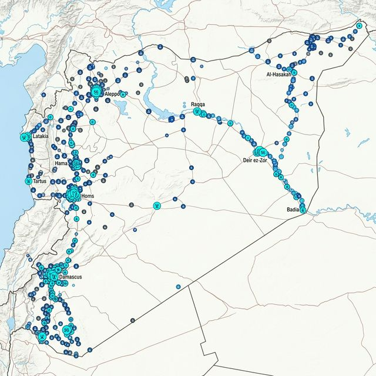
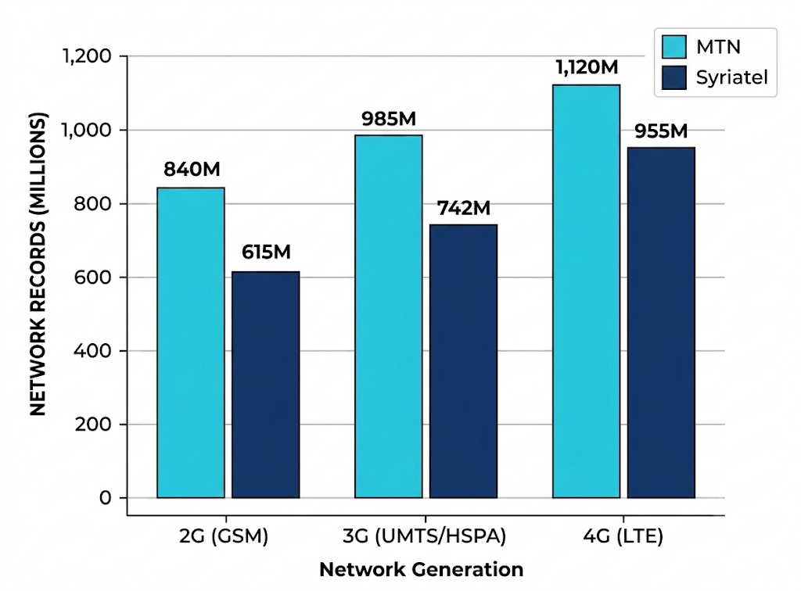
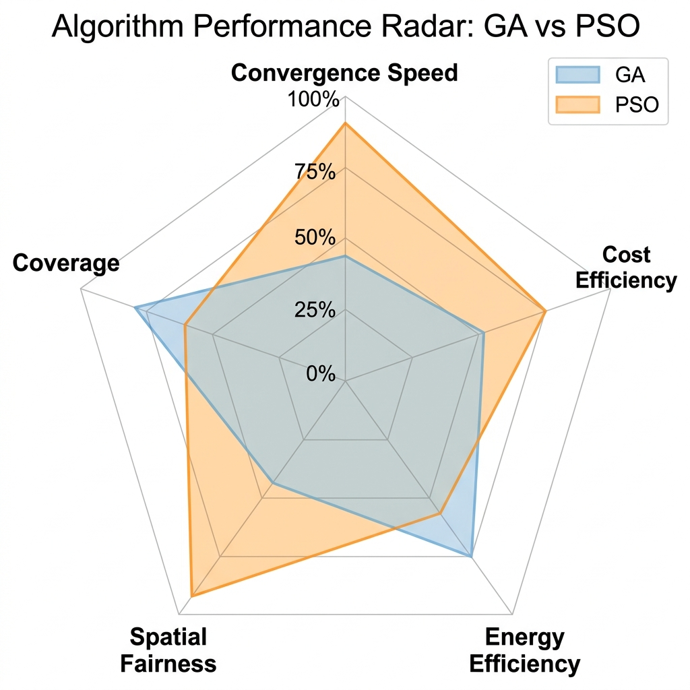
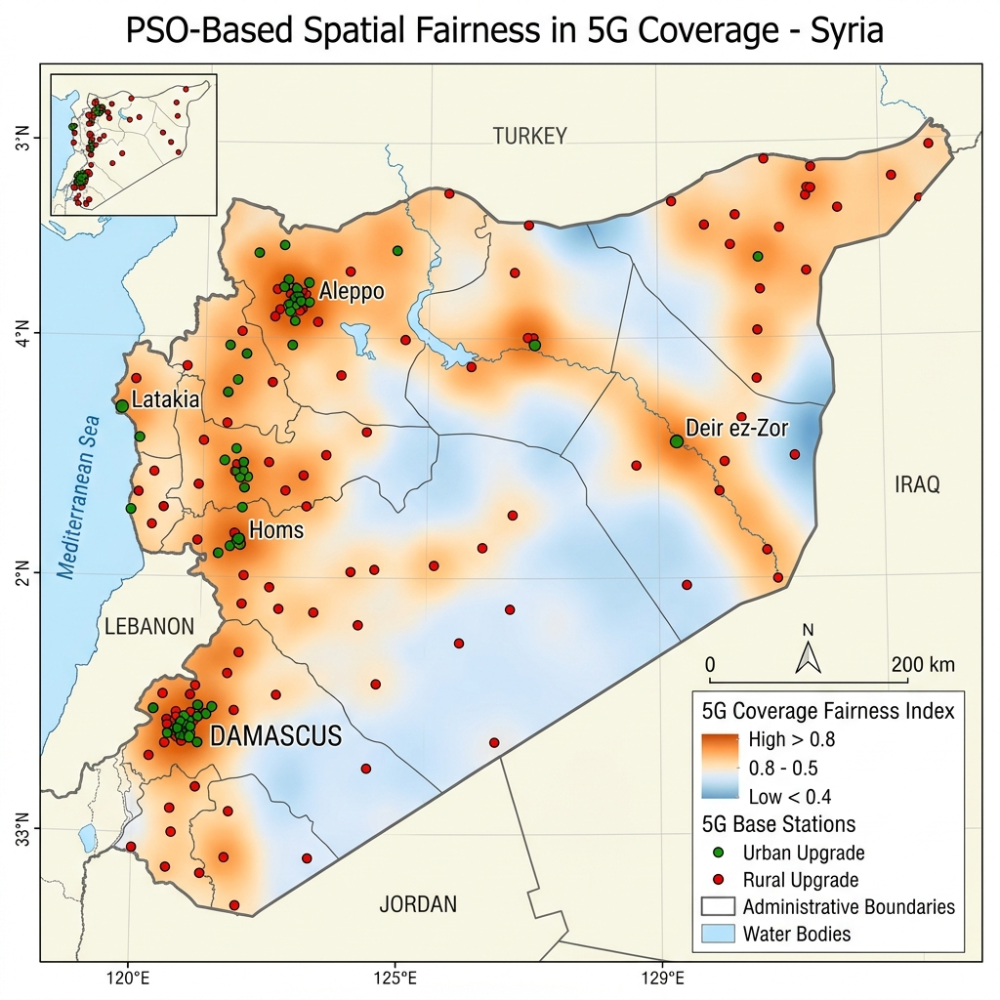
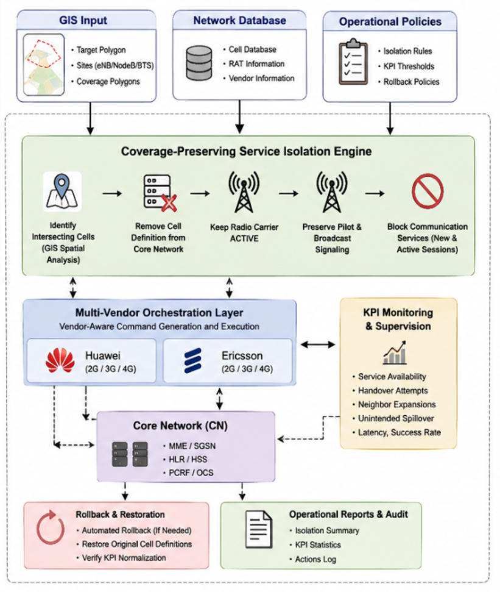

التخطيط والتحكم الذكي بالشبكة الخلوية
في بيئة نظم المعلومات الجغرافية (GIS)
Intelligent Planning and Control of Cellular Networks in a Geographic Information Systems Environment
ما الذي تقدمه هذه الأطروحة؟
إطار عمل تكاملي يجمع العلم المكاني مع التحكم التشغيلي للشبكات الخلويةلماذا نحتاج إلى هذا الحل؟ التحديات الميدانية للشبكة السورية
معضلتا الاستثمار المالي المكاني وتحديات إدارة التغطية في الطوارئ- كلفة استثمارية باهظة: تعذر النشر الشامل لـ 5G والحاجة لترقية مرحلية ذكية.
- الفجوة الجغرافية (حضر / ريف): تركز الترقية بالمدن وتهميش الأرياف اقتصادياً.
- تحديات الطاقة: ارتفاع كلفة التغذية الكهربائية ومحدودية مصادر الطاقة للمواقع.
- غياب العدالة المكانية: إهمال النماذج التقليدية للتوزيع المنصف للخدمات.
- أضرار التشويش الراديوي: تلوث طيفي عشوائي وتعطيل قنوات الطوارئ والإغاثة.
- تسرب التغطية: عجز التشويش الفيزيائي عن الالتزام بالحدود الجغرافية الدقيقة.
- تعدد الموردين: وجود تجهيزات Huawei وEricsson دون أداة تنسيق موحدة.

من الحلول التقليدية إلى الإطار المتكامل
تحديد الفجوات العلمية وسدها عبر المنهجية المقترحة بالأطروحةالتركيز الأحادي على تعظيم التغطية الإجمالية فقط يوجه كل الاستثمارات للمدن الكثيفة ويهمل الأرياف كلياً.
معالجة التخطيط طويل الأمد كمسألة مستقلة تماماً عن إدارة الأزمات والتحكم الجغرافي الطارئ.
الاعتماد على أجهزة التشويش أو إطفاء المحطات العشوائي دون تحكم دقيق بقنوات الخدمة.
صياغة رياضية صريحة تعتمد مؤشر Jain's Fairness لضمان توزيع إنمائي منصف لأبراج 5G.
ربط التخطيط الاستراتيجي بالتحكم التشغيلي بالاعتماد على قاعدة بيانات جغرافية مركزية موحدة.
تقييد قنوات الخدمة (Bearer Control) مع إبقاء قنوات الطوارئ ومراقبة مؤشرات الأداء الحية.
قاعدة بيانات واقعية شاملة للبنية التحتية الخلوية السورية
بناء وتوحيد أضخم قاعدة بيانات تشغيلية جغرافية مكانية للمشغلين في سوريا
إطار عمل موحد لمسارين تكامليين (تخطيط استراتيجي + تحكم تشغيلي)
البنية التكاملية التي تربط بين بيانات البنية التحتية، الخوارزميات التجريبية، والتحكم الشبكي المنسقNational Cellular Database تضم 79,268 موقعاً خلوياً مع كامل المعالم الفنية للمشغلين.
تنقية البيانات، إسقاط المضلعات الجغرافية، وحساب تقاطعات التغطية ومؤشرات الطلب السكاني.
BPSO & AGA مع آليات إصلاح القيود
Coverage · CAPEX · Energy · SFI
Multi-Vendor (Huawei & Ericsson)
Bearer Restriction & KPI Monitoring
صياغة مسألة الترقية وخوارزميات BPSO و AGA
تحسين متعدد الأهداف مع آلية معالجة وإصلاح القيود الصارمة للميزانيةنمذجة موقع الجسيم كمتجه ثنائي (0 أو 1) يمثل قرار ترقية كل موقع خلوي إلى تقنية 5G.
- دالة نقل ثنائية متقدمة لتحديث سرعات ومواقع الجسيمات بكفاءة في الفضاء المتقطع.
- سرعة تقارب قياسية: بلغت الحل الأمثل في 118 ثانية فقط.
- حققت تفوقاً شاملاً في التغطية، خفض الإنفاق الرأسمالي، وترشيد استهلاك الطاقة.
استخدام معدلات تكيفية للعبور والطفرة (Adaptive Crossover & Mutation) تتغير بحسب لياقة الأفراد.
- تطبيق آلية إصلاح الجينات (Constraint Repair Mechanism) لتجنب الحلول غير المجدية.
- أظهرت استقراراً إحصائياً عالياً جداً وانحرافاً معيارياً منخفضاً عبر تكرار التجارب.
- استغرقت 142 ثانية، وحققت تغطية 94.91% بكلفة 141.2 مليون دولار.
مقارنة أداء BPSO مقابل AGA والنماذج المرجعية
البيانات الرقمية الحقيقية لسيناريو قيد العدالة المكانية (الجدول ١ من الأطروحة)| الطريقة / الخوارزمية | التغطية (%) | الكلفة ($ مليون) | الطاقة (MWh) | العدالة (SFI) | الزمن (ثانية) |
|---|---|---|---|---|---|
| BPSO المقترحة الأفضل | 95.12% | 132.8 | 78.3 | 0.71 | 118 ثا |
| AGA المقترحة | 94.91% | 141.2 | 82.7 | 0.52 | 142 ثا |
| نموذج دون عدالة مكانيّة | 94.90% | 139.6 | 80.9 | 0.49 | 131 ثا |
| GA قياسية دون إصلاح | 94.75% | 143.8 | 84.1 | 0.48 | 158 ثا |
| الاختيار العشوائي (مرجعي) | 88.35% | 150.3 | 91.5 | 0.41 | - |
تفوقت خوارزمية BPSO المقترحة في كافة المؤشرات الكمية (أعلى تغطية، وفر مالي قدره 8.4 مليون دولار، وأعلى عدالة مكانية بفارق كبير 0.71 مقابل 0.52)، بينما تميزت AGA باستقرار إحصائي وتكراري أعلى.

من التغطية الجيدة إلى التوزيع العادل (Spatial Fairness)
إثبات الأثر الميداني لتطبيق مؤشر العدالة في توزيع أبراج الجيل الخامس في سوريا«لا يكفي أن تصل الشبكة إلى أكبر عدد من المشتركين عبر تكديس الأبراج في المدن المكتظة، بل يجب ضمان حق المجتمعات الريفية في الوصول إلى خدمات الاتصالات الحديثة دون الإخلال بالجدوى الاقتصادية».

التحكم الذكي بالتغطية والعزل الجغرافي الدقيق
إدارة استباقية قائمة على الشبكة الأساسية (Core Network) وتنسيق متعدد الموردينرسم المنطقة الجغرافية المستهدفة بدقة مضلعية في بيئة GIS.
تحديد قطاعات الخلايا المتقاطعة مع مراعاة زوايا الإشعاع.
تقييد Bearer Services في الـ Core مع إبقاء قنوات الطوارئ.
مراقبة مؤشرات الشبكة وتنفيذ Rollback الموثوق فور انتهاء الحدث.
- صفر تشويش راديوي: عدم إرسال أي طاقة تشويش بالفضاء، وحماية الطيف الترددي الوطني.
- إبقاء قنوات الطوارئ: استمرار قنوات البث العام والإشارات الاستدلالية لسلامة المواطنين.
- توافقية مع Huawei و Ericsson: توحيد تعليمات التحكم عبر طبقة أوركسترا وسيطة.
- تراجع كامل (Rollback): استعادة الخدمات فوراً دون الحاجة لإعادة تشغيل المحطات فيزيائياً.

دقة مكانية عالية وتنسيق تشغيلي موثوق في الطوارئ
النتائج الميدانية للعزل المكاني، انتشار الإشارة، وأزمنة استعادة الخدمة الكاملةماذا أضافت هذه الأطروحة للمكتبة العلمية والتطبيقية؟
أربع مساهمات جوهرية تشكل قيمة مضافة في قطاع الاتصالات ونظم المعلوماتتجميع وتدقيق وتوحيد بيانات 79,268 موقعاً خلوياً للمشغلين السوريين في بيئة GIS، لتكون أول قاعدة بيانات بحثية موحدة متكاملة لدراسات الاتصالات المتقدمة في سوريا.
صياغة نموذج استمثال رياضي رباعي الأهداف يدمج العدالة المكانية إلى جانب التغطية والكلفة والطاقة، مما يحمي حقوق الأرياف والمناطق النامية في الحصول على خدمات 5G.
ابتكار آليات إصلاح القيود في الخوارزميتين، وتقديم دراسة مقارنة معمقة أثبتت تفوق BPSO كمياً وسرعة، واستقرار AGA إحصائياً في فضاءات الحلول التوافقية الضخمة.
تقديم حل برمجي تشغيلي بديل للتشويش الراديوي يحقق عزلاً جغرافياً بنسبة 97.5% عبر الشبكة الأساسية، ويوفر آلية تراجع واستعادة موثوقة في دقائق معدودة.
التوصيات العملية: من النمذجة البحثية إلى التطبيق الوطني
خارطة طريق تنفيذية للهيئة الناظمة للاتصالات ومزودي الخدمة السوريينيوصى باعتماد خوارزمية BPSO لدى المشغلين السوريين (Syriatel و MTN) لتحديد أولويات ترقية المواقع نحو 5G لتحقيق أعلى تغطية بأدنى كلفة استثمارية.
توصية الهيئة الناظمة للاتصالات والبريد بإلزام المشغلين بشرط العدالة المكانية (SFI) كأحد بنود الترخيص، لضمان نصيب عادل للأرياف والمحافظات النامية.
إنشاء غرفة تحكم وطنية موحدة تربط نظم GIS مع شبكات المشغلين لإدارة سيناريوهات الطوارئ برمجياً والاستغناء عن معدات التشويش المشوهة للطيف.
الآفاق المستقبلية: نحو شبكات خلوية ذاتية التشغيل والتكيف
مسارات بحثية واعدة مستمدة من قيود الدراسة وتطورات الجيلين الخامس والسادسدمج نماذج التعلم العميق والشبكات العصبونية (LSTM / Graph Neural Networks) للتنبؤ بحركة المشتركين وتغيرات الطلب الزمانية والمكانية بدلاً من الاقتصار على بيانات الحالة الثابتة.
توسيع طبقة الأوركسترا متعددة الموردين لتشمل تجهيزات ZTE وNokia، ودعم معايير الشبكات المفتوحة Open-RAN لتقليل الارتهان لمورد اتصالات تجاري واحد.
توظيف وحدات المعالجة الرسومية (GPUs) والمعالجة المتوازية لتنفيذ حسابات التقاطع المكاني للخلايا في أجزاء من الثانية لسيناريوهات الاستجابة الفورية للطوارئ.
دمج نماذج الارتفاعات الطبوغرافية الرقمية (DEM) والبيئات العمرانية ثلاثية الأبعاد لتقليل نسبة الانتشار غير المقصود في المناطق الجبلية والريفية الوعرة في سوريا.
«التخطيط الذكي لا يقاس فقط بمدى اتساع التغطية،
بل بمدى كفاءتها وعدالتها وقدرتنا على التحكم بها»
شكراً جزيلاً لحسن استماعكم واهتمامكم
الباحث: م. ياسر المفعلاني · دمشق 2026